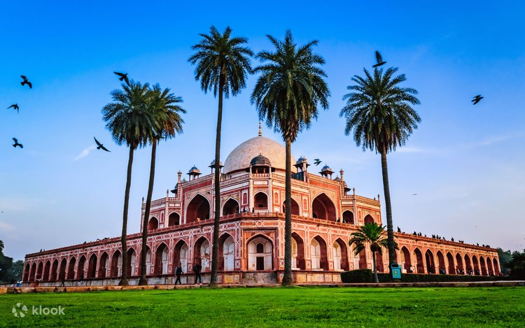
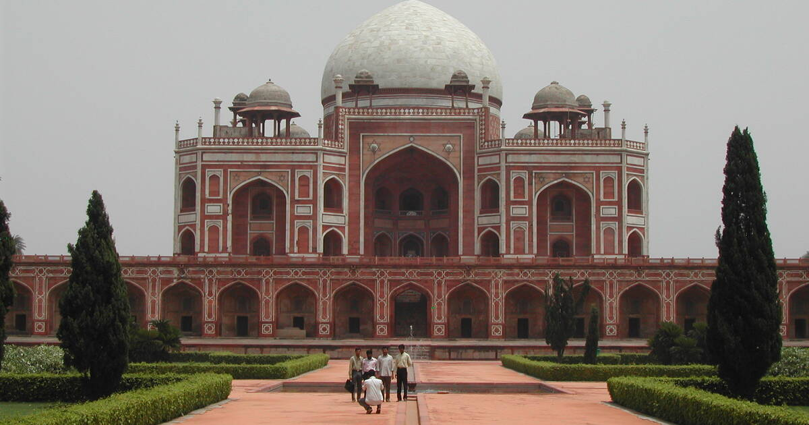

About Humayun's Tomb
Humayun's Tomb is a UNESCO World Heritage Site located in Delhi. It was built in 1570 and is considered the first garden tomb in the Indian subcontinent.
History
The tomb was commissioned by Empress Bega Begum, wife of Emperor Humayun. It represents the beginning of grand Mughal architecture in India.
Architecture
Built with red sandstone and white marble, the monument is set within a Persian-style charbagh garden layout.
Major Attractions
• Main Mausoleum • Charbagh Gardens • Isa Khan's Tomb • Beautiful Mughal Arches
Best Time to Visit
October to March offers the best weather for visiting.
Entry Fee & Timings
Indian Visitors: ₹40 Foreign Visitors: ₹600 Timings: Sunrise to Sunset
Gallery

